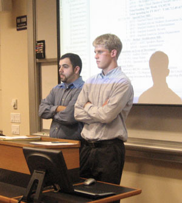
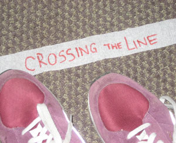

Confronting Divestment
Stanford’s distance from the Middle East does not exclude our campus from the polarization of the ideological conflict surrounding the region. On February 27, the ASSU Undergraduate Senate heard arguments from both sides on a proposed resolution urging Stanford to divest from Israel. The Senate will be voting on the matter before its term ends in May.
Us vs. Them?
A showing of the documentary “Obsession: Radical Islam’s War against the West” occurred in the History Corner on Wednesday, February 20th. The event was met by a mixture of vocal support and skepticism from the movie-goers, and drew a large crowd of students and community members of all different faiths and creeds. [Disclaimier: Several Review staff helped organize the event, though this author did not].
Smoke Signals
As finals week begins to ramp up, so does the elections season. It’s a crowded field, as new candidates declare every day and special interests start lobbying for money.
On a non-Stanford related note, people in Washington are all needlessly worked up about some national pow-wow in 2008.
Looking at Iraq Through the Lens of History
From its conception, the Iraq war has been haunted by the ghosts of wars past. Whether explicitly or implicitly, scholars, pundits and politicians constantly compare Iraq to other American wars already cast to annals of history. As a result, many people’s fundamental conception of the conflict is rooted in historical analogy. An analogy becomes the way to interpret everything about the Iraq war and its place in the “War on Terror”—its morality, its potential outcome, its strategy, and more. Indeed, it appears that the greatest determinant of opinion on Iraq is which historical model you chose to use a guide. Debates over Iraq boil down to an argument over which historical paradigm is most accurate.
A Friend in Need is a Friend Indeed: On the importance of keeping our Pacific allies
The media often reports Great Britain as our greatest ally because the United Kingdom remains the strongest among America’s allies and because our two nations share similar struggles. But I would question whether we might have closer friends in the world, who are willing to make greater sacrifices for less credit. Whereas British Prime Minister Tony Blair has been generally supportive of our efforts, he always seems to have hidden reservations, particularly with regard to climate change and, now more than ever before, Iraq. On the other hand, Prime Minister John Howard of Australia has been a steadfast proponent of our actions overseas; Prime Minister Junichuro Koizumi of Japan and his successor Shinzo Abe have also made notable commitments to the causes we consider valuable. Such contributions are particularly important given the increasing importance of Asia in the world today and need to be realized by American leaders so that they may feel justly rewarded.
|
Stanford’s Failed Trickle-Down Policy
Stanford University is currently benefiting from an unprecedented array of financial successes. The endowment grew by an impressive 15.4% last year, surpassing Princeton’s endowment and bringing its total to $14.1 billion, third place behind Harvard and Yale. It was recently reported that Stanford also raised an incredible $911 million last year, shattering the previous worldwide record for university fundraising by more than $300 million (also set by Stanford). 40% of alums contributed to the fundraising drive, and most of the fundraising campaign was based around the new $4.3 billion Stanford Challenge capital campaign.
Politicians, Letter Writing, and the Darfur Crisis
Just two weeks ago, on February 16th, Stanford’s chapter of Students Taking Action Now: Darfur (STAND) organized a major letter-writing session, urging students to sign pre-written letters to their congressmen. According to The Stanford Daily, the purpose of this is to convince the U.S. government to “expedite the deployment of a 20,000-member peacekeeping force” as well as “commit to funding the effort.”

Crossing the Line Raises More Questions than Answers
Last week, my RAs threatened to fine students $25 if they did not attend the “mandatory” ResEd program “Crossing the Line” (note: they did not later enforce the fine). The RAs did not offer any information about the program besides that it would help build dorm camaraderie. Not until students were inside the room and the doors were shut did the program facilitator Josh Schiller introduce himself as a representative of the Multicultural Education Training Organization (METrO) and reveal the purpose of the program: to build “community by visually demonstrating dimension in individuals and commonality in a community where there is overlap in multiple identities.”
Islamofascism
The intellectual history of fascism shows that our common conception of it in America is dangerously misguided. It is imprudent to think of fascism as a catchall pejorative meant to characterize policies or governments we find repulsive, and it is dangerous to have such misconceptions about a powerful social and political idea, especially one that is still alive and well in the twenty-first century. The reality is that fascism has a coherent political philosophy and presents a powerful critique, as Marxism did, of bourgeois democracy and capitalism. Its intellectual roots trace back in the West to the atomization and disintegration of social life that began in the late Renaissance and Enlightenment, moving up through modernity through the Romantic period and into the twentieth century.
Tolerance’s Double Standard
Liberalism, through the values of tolerance that it espouses, has done immeasurable good for America during the last fifty years. Those of us who now gripe about or poke fun at the petty excesses of “political correctness” very likely never experienced (or else have forgotten) what it was like to live in a time when it was still acceptable in public to make gratuitous remarks that degraded and humiliated those of a particular gender, skin color, or religion. It is to our nation’s credit that social norms have changed so much in this regard over the last several decades, such that in many communities today, a bigot is much more likely to face ostracism than his victim.
|